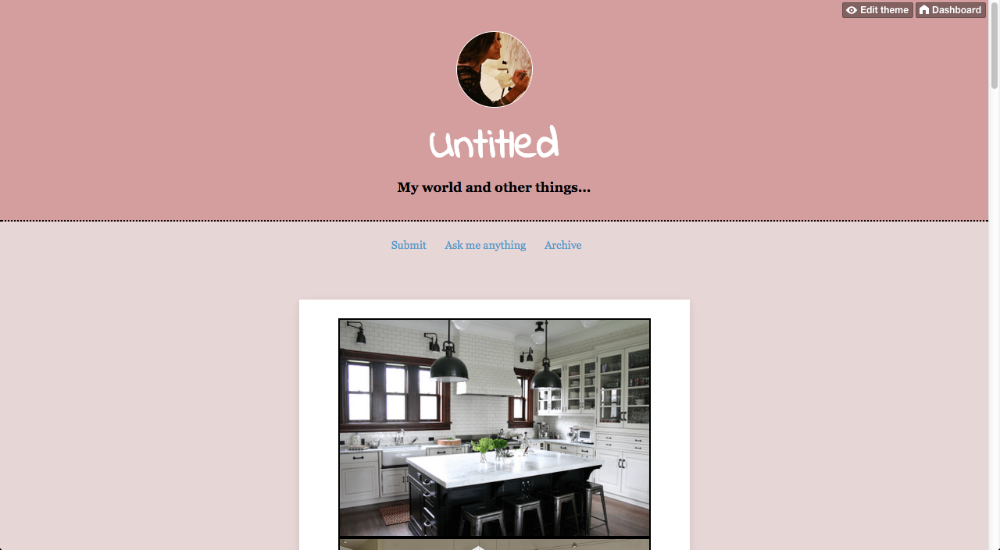
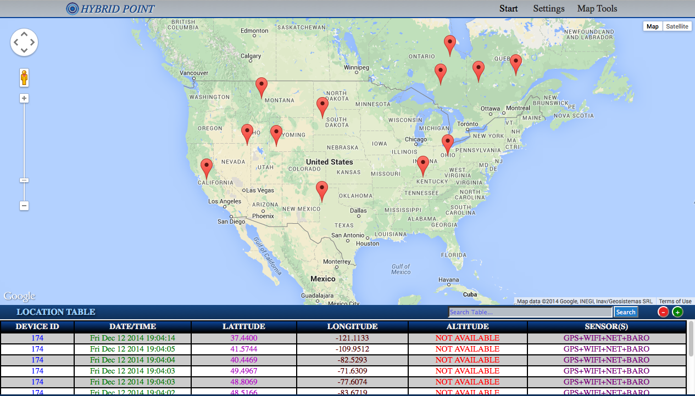

DEVELOPMENT

Maps for Meetup
This project maps the location of upcoming events for any particular Meetup group on a Mapbox map. Additionally also provides certain information like name, address, date and time of each event. The idea is to integrate this project into Girl Develop It - San Jose Chapter's website Code available on my github page. Roles: Design and Development Tools used: Meetup's RESTful Api, Mapbox.js, CartoCSS (to stylize map), Bootstrap framework, GeoJSON

Hybrid Point UI
This UI was inspired by some of the projects I had worked on during a previous internship at a company that makes software for location and tracking. Hybrid Point Map is a web application that is a work in progress using Google Maps API. To learn more about this project and it's code you can checkout my github page Roles: Design and Development Tools used: Google Maps API
DESIGN
I usually do alot of my own design work especially for all my personal projects. They range from prototyping wireframes to designing mockups to creating graphic icons. I love the design process just as much as my development process. Usual go to tools are almost always Photoshop or Illustrator or sometimes just pencil and paper. Click below to expand some of these designs.
HYBRID POINT UI

UX/UI Design
This is a very similar mockup I designed for a geolocation software development company I interned at. Each element in this UI has been designed by me except for the Google Map.
Tools: Adobe Illustrator/Photoshop, GIMP